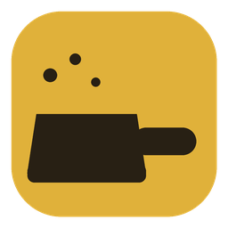

DustpanA tiny, free Mac utility. Drag the icons you don't need behind a divider, click once, and they're gone until you want them. No permissions, nothing clever.
Seven icons are swept away. Click the chevron.
Download for MacEverything you hid comes back with a click on the chevron, and goes away again on the next.
Showed the icons to check something? They tidy themselves away after 10 seconds. Change it, or turn it off.
Hold ⌘ and drag an icon to the left of the divider. That's the whole setup. Drag it back to unhide.
⌃ ⌥ H toggles from the keyboard. Pick another, or switch it off.
That really is the whole trick. The apps behind the hidden icons keep running normally, and icons to the right of the divider, including Apple's own, are never touched. Dustpan needs no Accessibility or Screen Recording permission because it never looks at anything; it only resizes its own divider. The code is open for you to check.